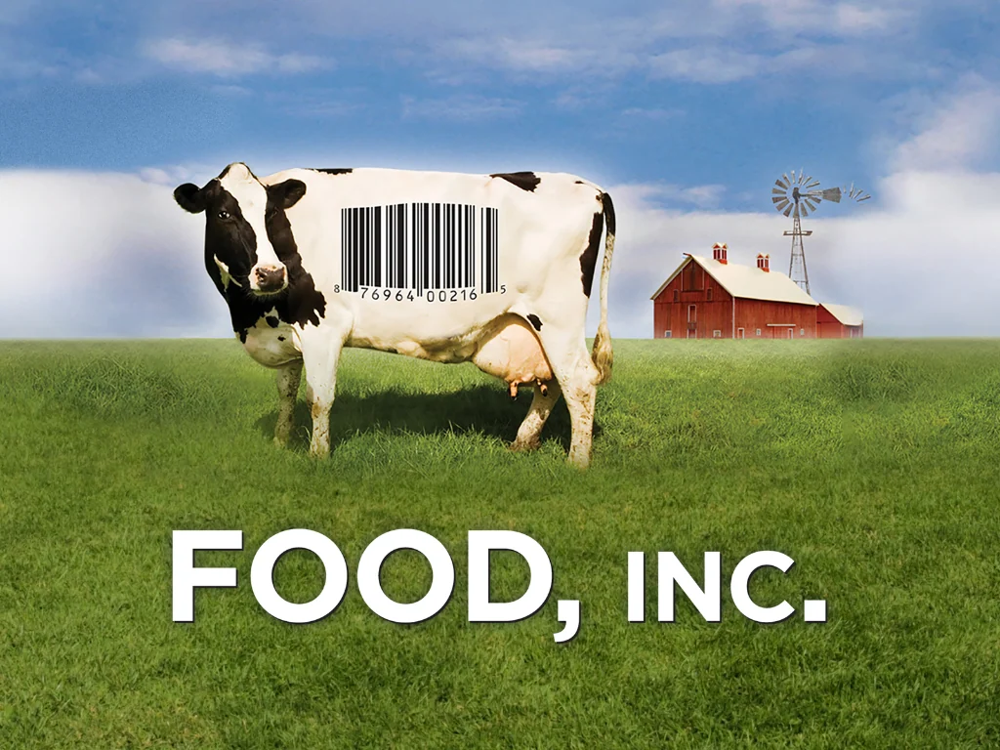

Robert Kenner'ın yönettiği Food, Inc., modern Amerikan gıda endüstrisinin işleyişini üretimin farklı aşamalarını izleyerek inceliyor. Film; et ve kümes hayvanları üretiminden mısır ve soya gibi temel tarım ürünlerine, oradan market raflarına uzanan zincirde büyük şirketlerin rolünü ele alıyor.
Belgesel yalnızca yiyeceklerin nasıl üretildiğine değil, bu düzenin çalışanlar ve tüketiciler üzerindeki etkilerine de bakıyor. Gıda güvenliği, hayvanların yetiştirilme koşulları, çiftçilerin büyük alıcılarla ilişkisi ve tüketicinin ürünün kaynağını ne ölçüde öğrenebildiği anlatının öne çıkan başlıkları arasında.
Filmin temel sorusu, “Akşam yemeğimizin arkasındaki üretim düzenini gerçekten biliyor muyuz?” şeklinde özetlenebilir. Bu, sistemin görünmeyen taraflarına dikkat çeken belirgin bir eleştirel bakış. İzlerken filmi tarafsız bir gıda rehberi gibi değil, savlarını röportaj ve örneklerle destekleyen bir araştırma belgeseli olarak değerlendirmek; sağlık ve üretimle ilgili iddiaları başka güvenilir kaynaklarla da karşılaştırmak yerinde olur.
Gıda üretimi, tüketim alışkanlıkları ve şirketlerin günlük yaşam üzerindeki etkileri ilgini çekiyorsa, film düşündürücü bir başlangıç sunuyor. Her ürünü tek tek seçmenin ötesinde, üretim sisteminin nasıl kurulduğunu ve bu sistemde şeffaflığın kimler için önemli olduğunu sorgulatıyor.